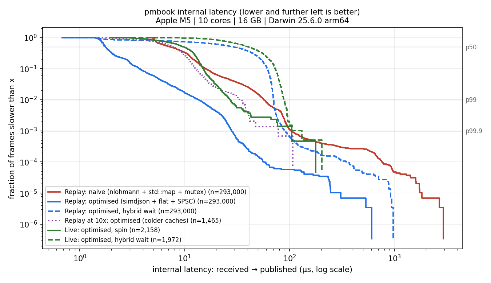

Twelve minutes of a live order book.
pmbook is a low-latency engine that listens to Polymarket's live market feed, keeps an exact order book for every outcome, and records everything so a session can be replayed perfectly. Below is its real output from 1 November 2026, three 2026 US election markets, played back in your browser.
Microprice inside the spread · seq –
Tape
0 / 0 updates
The price levels didn't move in this window. What moved is how many shares people wanted at each level, and the microprice tracks that pressure.
From a WebSocket frame to a published book.
Receive
A network thread stamps each frame on arrival and hands it on through a lock-free queue, so slow work never delays the socket.
Parse
simdjson turns JSON into exact integers. Prices are fixed point, never floats, so 0.1 is really 0.1.
Book
One array slot per possible price plus a bitmap. Finding the best price takes a couple of CPU instructions.
Check
The feed has no sequence numbers, so every update is checked against the exchange's own best bid and ask.
Publish & record
One JSON line per change goes to the strategy. Raw frames are saved so any session replays exactly.
Same data, two engines.
| Internal latency | p50 | p99 | p99.9 |
|---|---|---|---|
| Naive · nlohmann + std::map + mutex | 7.3 µs | 57.3 µs | 103.4 µs |
| Optimised · simdjson + flat array + SPSC | 1.8 µs | 13.6 µs | 28.2 µs |
| Live, 10 minutes, 6 tokens | 9.7 µs | 27.1 µs | 104.4 µs |
Timed from the moment a frame reaches the engine to the moment its book line is published, over 293,000 replayed frames. Measured on an Apple M5 laptop. Network and exchange latency are not included, and this page is a JavaScript playback of the engine's output, not the C++ engine itself. 106 tests run under AddressSanitizer, UndefinedBehaviorSanitizer and ThreadSanitizer on every build.
